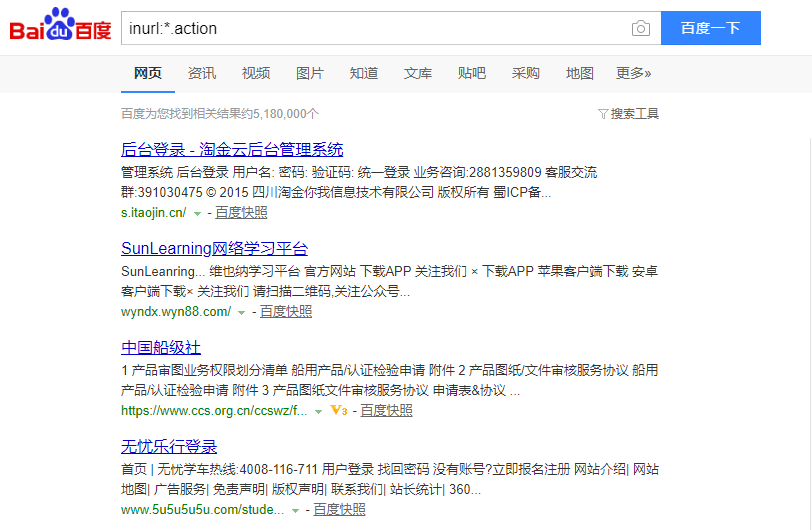

常规搜索引擎
高级语法巧用
- 高级语法组合：

敏感关键字搜索
网络空间设备搜索：fofa
| key | value |
|---|---|
| country="CN" | 搜索中国的资产 |
| region="Zhejiang" | 搜索指定行政区的资产 |
| city="Hangzhou" | 搜索指定城市的ip资产 |
| title="abc" | 从标题中搜索abc |
查询条件连接：&&
eg:
查询所属城市为杭州、标题为后台登录的页面
city="Hangzhou"&&title="后台登录"
泄密查询——百度网盘泄密
- 关键字：XXX公司内部资料
- 关键字：XXX网密码
泄密查询——GITHUB
- 推荐项目：https://github.com/0xbug/Hawkeye
- 监控GitHub的代码库，及时发现员工托管公司代码到GitHub的行为并预警，降低代码泄露风险。